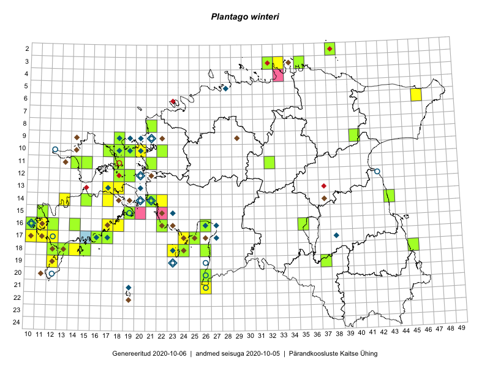

Plantago winteri
Uuendatud: 2016-12-02
Kaardile koondatud taksonid: Plantago winteri Wirtg.

Kaart põhineb 42 kirjel, neist vaatlusi 41 ja eksemplare 1. Taksonit on leitud 29 ruudust.
Kuvatud viited 20 esimesele andmebaasikirjele, ülejäänud PlutoFis
- Rein Kalamees, Kersti Püssa: 2015-08-04: 03-33: ala
- Toomas Kukk, Peedu Saar: 2014-07-03: 14-21: ala
- Toomas Kukk: 2014-06-18: 18-14: ala
- Peedu Saar, Ott Luuk: 2015-10-14: 16-11: GPS punkt
- Meeli Mesipuu, Kadri Tali: 2015-07-06: 16-17: ala
- Meeli Mesipuu: 2015-07-18: 16-26: ala
- Meeli Mesipuu: 2015-07-18: 16-26: GPS punkt
- Mari Reitalu: 2014-09-02: 17-12: ala
- Meeli Mesipuu: 2015-06-21: 15-19: ala
- Meeli Mesipuu: 2015-06-21: 15-19: GPS punkt
- Mari Reitalu, Oliver Parrest: 2015-08-04: 16-10: ala
- Mari Reitalu: 2015-09-04: 16-12: ala
- Mari Reitalu: 2015-09-04: 16-12: GPS punkt
- Mari Reitalu, Sirje Azarov, Oliver Parrest: 2015-08-02: 18-12: ala
- Mari Reitalu, Oliver Parrest: 2015-08-04: 17-10: ala
- Mari Reitalu, Oliver Parrest: 2015-07-16: 15-11: ala
- Meeli Mesipuu: 2015-06-27: 16-26: ala
- Sirje Azarov, Aira Alasi: 2015-08-17: 17-16: GPS punkt
- Mari Reitalu, Oliver Parrest: 2015-07-16: 15-11: GPS punkt
- Ott Luuk, Peedu Saar: 2014-07-29: 10-20: ala